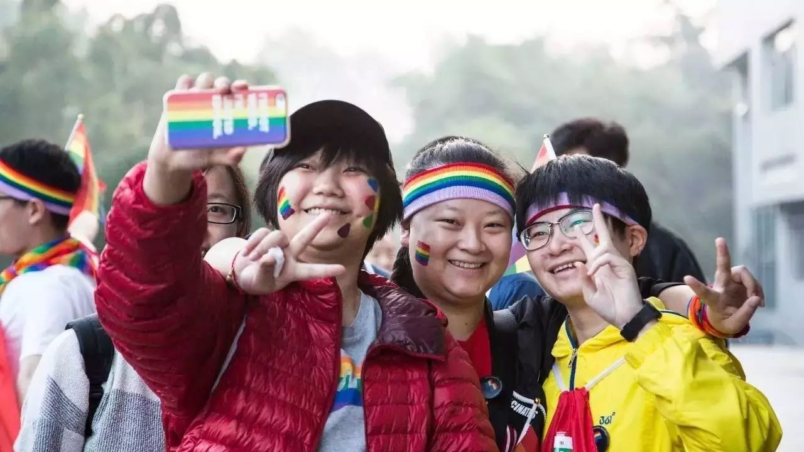
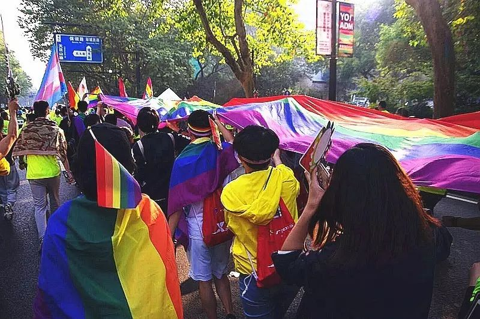

彩虹马拉松 | 参加杭马彩虹跑是怎样一种体验？


参加过两次杭马彩虹跑了，我自封“两朝元老”，颇为得意。
心情当然是激动的，本来以为经过一年的学习我已经不再是一只刚出道没见过世面的baby dyke了，第二次参加彩虹跑不会再有什么特别的感觉，但这次马拉松开始的前一天晚上我还是翻来覆去睡不着觉（闭着眼睛在脑海中分别构思了明天穿什么、生科导实验报告的心得写什么、军理论文写什么、世界文明史论文写什么等等），一点多才入睡，然后五点就又该起了。
穿上了自己最JI的装备，在脸上画了好看的彩虹，戴上了印有浙江大学校徽的帽子，披上了向阳花开让我托管的彩虹旗，我与各位小伙伴洋溢着一身JI气，汇入了浩浩荡荡的人流之中。
而我如此装扮是富有意义的：我是一名女同性恋者，也是一名浙大学子，它们是共同组成我完整人格的其中两个标签；我为自己身为浙大人而骄傲，也为能够自由地表达我的女同性恋身份而骄傲，所以我选择在本次彩虹马拉松中将这两个令我骄傲的身份一起向他人展示。

· 本文作者（左）与一起参加彩虹跑的小伙伴
长达10米的彩虹旗十分引人注目，引得许多路人围观拍照。大家喊的口号特别带劲，但是路人一般对“家家都有性少数，社会需要宽容度”“杭州因多元而美丽”这样的口号没有什么反应，在我们喊出“家家都有同性恋，只是你们看不见”“爱情不分性别，同性一样和谐”时方才恍然大悟。许多路人在明白了彩虹旗的含义后对我们表示支持，令我印象最深刻的是，当我们还在体育场内向起点出发的路上，有一位白人（生理）女性看到我的装扮后对我说，“LGBT加油”，我十分感动，顿时精神振奋，昂首前进。

· 长达10米的彩虹旗
我觉得，一些参加彩虹跑的小伙伴对“女权”的理解还是稍有不足的，具体体现在：某位生理男性的小伙伴在拿到“不只能顶半边天，妇女能顶整片天”的标语牌时，觉得自己拿着不太妥，想要交到别人手中（当然我欣然收下了）；以及，大家在喊“不只能顶半边天，妇女能顶整片天”的口号时，有一些小伙伴觉得喊起来怪怪的，还有一些女性小伙伴拒绝喊这个口号，称他们（我坚持使用“他们”指代任何群体，不论其性别成分）不是“妇女”，是只过“三七”不过“三八”的“女生”。

· 彩虹旗与标语牌
当然啦，这个活动终归很欢乐的，加上今年天气晴朗、警民和谐、聚餐吃的川菜、攀上了一个打车能报销的组织并蹭了他们的出租车，我感到无比开心与骄傲。